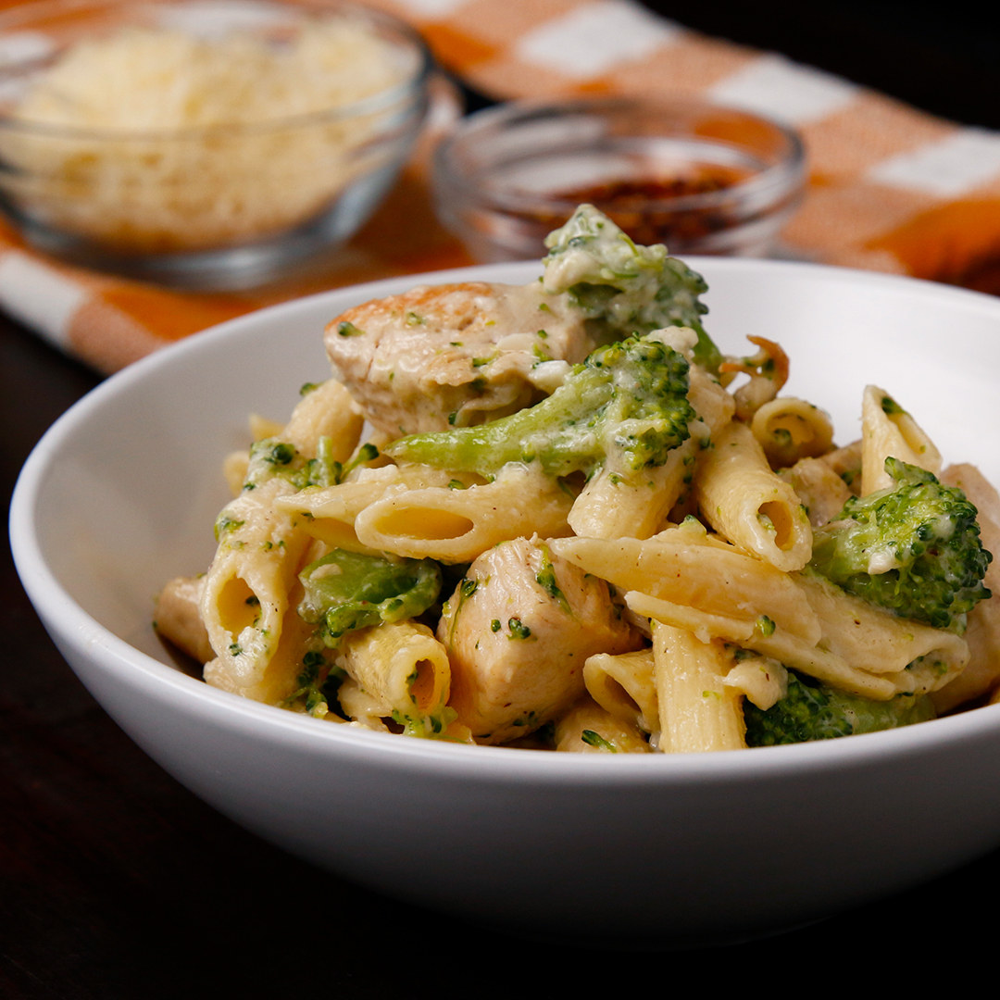

Chicken Broccoli Alfredo

Description
Bored of eating rice and spam every day? Tired of ordering takeout because you don't have time? Well look no further! Chicken broccoli alfredo is the perfect dish for you! Chicken broccoli alfredo is a dish that can be made within 30 minutes, and the ingredients aren't expensive either. The taste of this recipe will make you wonder why we go out to fancy restaurants when we can make some chicken broccoli alfredo at home!
Ingredients
- salt, to taste
- pepper, to taste
- 8 oz penne pasta
- 2 cups broccoli floret
- 2 tablespoons olive oil
- 2 boneless, skinless chicken breasts, cubed
- 1/4 cup butter
- 3 cloves garlic, minced
- 1 cup heavy cream
- 1 teaspoon salt
- 1/8 teaspoon nutmeg
- 1/4 teaspoon black pepper
- 1 1/2 cups grated parmesan chese, plus extra for garnish
- red pepper flake, to garnish
Steps
- Bring a quart (950 ML) of water in a large pot to a boil over high heat, and salt to taste.
- Cook pasta for 8 minutes, or until slightly underdone.
- Add broccoli to pasta and simmer for 4 minutes with the lid on.
- Strain the pasta and broccoli in a colander, and run cold water over to prevent the broccoli from over cooking.
- Heat the olive oil in the pot over medium-high heat, and add the chicken. Season the chicken with salt and pepper.
- Once the chicken is cooked through, remove it from the pot and set aside.
- Add the butter to the pot, and melt it. Once the butter is fully melted, add in garlic and stir continuously for 10 seconds.
- Add the heavy cream, salt, pepper, and nutmeg. Stir often, and cook until sauce starts to bubble slightly.
- Once the sauce is bubbling and begins to cook down, add in Parmesan cheese and stir until the sauce thickens.
- Add in the cooked chicken, pasta, and broccoli, and stir until fully combined.
- Top with Parmesan cheese or red chili flakes.
- Enjoy the meal!